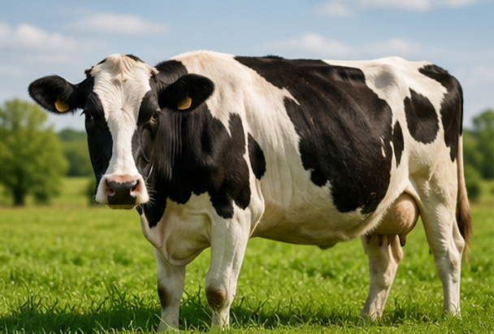
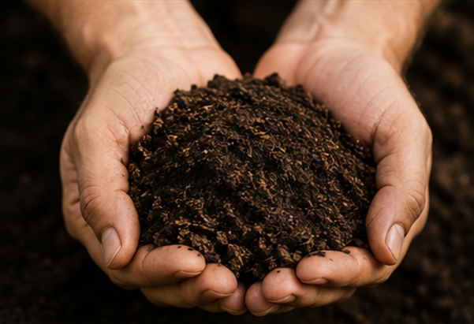

Premium organic solutions for healthy soil and sustainable farming
Best Seller
Our premium Cow Dung Manure is a 100% natural, organic fertilizer rich in essential nutrients. Perfect for improving soil structure, increasing microbial activity, and promoting healthy plant growth.

New Product
Traditional and eco-friendly cow dung cakes are an excellent source of organic matter and nutrients for agricultural and horticultural purposes. These are ideal for soil amendment and sustainable farming practices.

Popular Choice
Our advanced organic soil fertilizer is a specially formulated blend designed to provide optimal nutrition for soil and plants. This premium product combines the best of traditional wisdom with modern agricultural science.
Choose the right product for your farming needs
| Feature | Cow Dung Manure | Cow Dung Cake | Organic Soil Fertilizer |
|---|---|---|---|
| Organic Content | |||
| Immediate Availability | |||
| Best for Soil Condition | Excellent | Very Good | Excellent |
| NPK Ratio | 2-1-2 | Variable | 3-2-2 |
| Ease of Application | Easy | Moderate | Very Easy |
| Cost Effectiveness | High | High | Medium |
| Suitable for All Crops |
Find answers to common questions about our products
Contact us today to place your order or get expert advice on the best product for your farm.